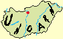
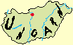

|
Ungarn - Tourist -
Information
|
|
Viele haben Budapest in ihren Flugplan
aufgenommen. Die
Donaumetropole erreicht man z.B. von Hamburg in 75 Minuten Flugzeit -
schneller, sicherer und kostengünstiger als Berlin mit der Bahn. Am
Flughafen Ferihegy (25 km von Budapest) haben alle großen Autovermieter
eine Niederlassung.

Für Urlauber aus
dem Süden Deutschlands kann eine Anreise mit dem Auto interessant sein.
Die Strecke München-Budapest beträgt rd. 700 Kilometer, aus Dresden ähnlich viel. Wer nicht mit
dem eigenen Auto anreisen möchte, kann günstige Mietwagen . Für einen Mittelklassewagen muss man mit ungefähr 350 Euro
Wochenmiete rechnen.
|
|
Sprache - die Amtssprache ist Ungarisch, sehr
viele Ungarn sprechen Deutsch, die Jüngeren lernen eher Englisch.
|
|
Einreiseformalitäten - Für Deutsche genügt ein Personalausweis.
Kreditkarten (Visa und EuroCard) werden überall akzeptiert. In Ungarn
zahlt man mit Forint - zur Zeit entspricht ein Euro ungefähr 250
ungarischen Forint.
|
|
Die
beste Reisezeit
liegt zwischen April und September. Günstige Kurreisen bieten sich in
den Monaten Oktober, November, sowie Januar und Februar an.
|
|
Warum
nach Ungarn und warum ausgerechnet nach Budapest ?
|
|
Wer bei
Ungarn an Paprika, Wein und Zigeunermusik denkt, liegt nicht unbedingt
verkehrt. Doch der Film mit Lieselotte Pulver „Ich denk so oft an
Piroschka“ war schon zur Drehzeit vor 50 Jahren eine Nostalgie. Ungarn
ist heute vielmehr! Wunderschöne Seen, Weinberge, die Puszta-Tiefebene,
Thermalquellen, Schlösser, Burgen, gepflegte Unterkünfte, vor allem
nette Gastgeber und eine gute Küche – alles in allem guter Service zu
günstigen Preisen - sind gute Gründe dafür, dass Ungarn inzwischen zu
den meist besuchten Ländern Europas zählt.
|
|
Warum nach Ungarn und warum ausgerechnet
nach Budapest ?

In keinem
anderen Land und in keiner anderen Großstadt der Welt gibt es so viele
Thermal- und Heilquellen wie in Ungarn und in Budapest. Die besondere
geologische Beschaffenheit des Karpatenbeckens mit Mineralien und
Spurenelementen verleiht dem Wasser eine enorme Heilkraft.
Dieser wertvolle Bodenschatz ist ein wichtiger touristischer Faktor für
Ungarn, zumal das Gesundheitsbewusstsein und der Wellnessbedarf der
Menschen ständig zunimmt.
|
|
Tipp für Kurreisende - In keinem anderen Land und in keiner
anderen Großstadt der Welt gibt es so viele Thermal- und Heilquellen
wie in Ungarn (über 800) und in 124. Die besondere geologische
Beschaffenheit des Karpatenbeckens mit Mineralien und Spurenelementen
verleiht dem Wasser Heilkraft. Dieser wertvolle Bodenschatz
ist ein wichtiger touristischer Faktor für Ungarn, zumal das
Gesundheitsbewusstsein und der Wellnessbedarf der Menschen ständig
zunimmt.
|
|
Reisetipp
Budapest - Es
gibt rd. 50 Heilbäder in . Der 20. August ist der größte
Nationalfeiertag in Ungarn, der vor allem in Budapest groß gefeiert
wird. Besonders schön ist das Feuerwerk über der Donau, das zum
Abschluss des Nationalfeiertags abgehalten wird. Auf beiden Seiten des
Flusses drängen sich dann die Menschenmassen. Eine gute
Ausweichmöglichkeit ist der Gellertberg, von dem aus man einen sehr
schönen Blick auf das Feuerwerk hat.
für Ungarn
|
|
Reiten in Ungarn - Seit vielen Jahrzehnten ist Ungarn für
qualitativ hochwertige Reiterferien ein Tipp. Schwarze Schafe,
überwiegend aus dem Westen, haben in der politischen Wendezeit vieles
günstig aufgekauft und diesen Tourismuszweig durch schlechte Behandlung
der Tiere, überteuerte Preise und inakzeptable Unterkünfte in Verruf
gebracht.
Deswegen hat der Ungarische
Verband für Reittourismus ein in ganz Europa einzigartiges
Qualifikationssystem erarbeitet. Reitschulen werden vor Ort peinlich
genau getestet und bewertet. Die geprüften Reitschulen sind in der
Broschüre "Hoch zu Ross in Ungarn" veröffentlicht. Beziehen kann man
diese über das Tourismus-Amt.
|
|
Immobilien - Warum in Ungarn investieren?
- Seit fast zwei Jahrzehnten wird
US-Investoren Ungarn als das Land mit dem höchsten Wertzuwachs
empfohlen - und ein Ende der Aufschwungsphase ist dort noch lange nicht
in Sicht. sind noch immer unterbewertet und empfehlen
sich als sichere Zukunftsinvestition - kurz- und auch
langfristig.
|
|
 Kultur - Natürlich hat Ungarn auch kulturell und
landschaftlich vieles zu bieten. Allein die Schönheit Budapests und der
Donau sind in zahlreichen Operettenliedern und Gedichten verewigt. Kultur - Natürlich hat Ungarn auch kulturell und
landschaftlich vieles zu bieten. Allein die Schönheit Budapests und der
Donau sind in zahlreichen Operettenliedern und Gedichten verewigt.
Den Tokajerwein bekommt man auch bei uns, aber original
Gulasch oder die ungarische Fischsuppe, wie die gesamte ungarische
Küche überhaupt, sie schmecken nur im Land der Magyaren
richtig, wo unverfälschte Gewürze sie prägen. Da
gibt es sogar das besonders schmackhafte Mangalica Schwein mit dem
weltweit einzigen cholesterinarmen Fettanteil. Und ob der Ungarnwein
hierzulande zu deutschen Speisen genauso gut schmeckt, wie unterwegs in
den vielen Weinkellern während einer musikalischen
Folkloredarstellung
oder in einer Tscharda bei Zigeunermusik, das können Sie nur vor
Ort
erfahren.
Lassen Sie sich verzaubern im neuen
EU-Musterland !
Herzlich Willkommen in Ungarn !
|
|
|


 
